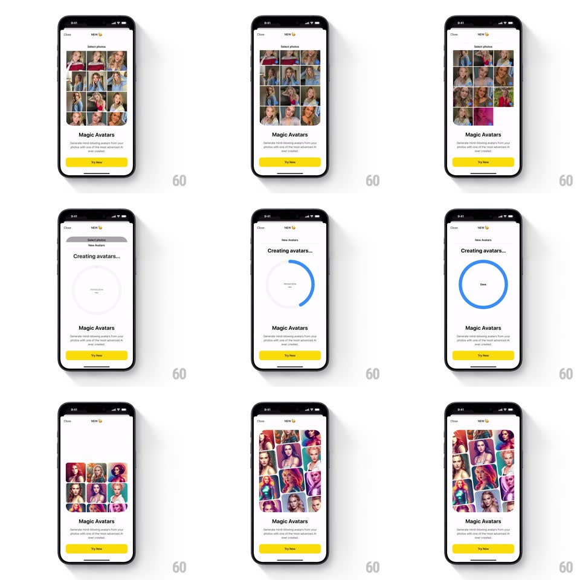

Media
Frame-by-frame

Rebuild this interaction 1:1: Prisma's Magic Avatars intro sheet - an automated walkthrough inside a bottom sheet: a photo-picker grid of selfies slides through, "Creating avatars..." spins a blue progress ring to Done, and a grid of vivid AI avatars lands beneath the pitch and yellow "Try Now".

Rebuild this interaction 1:1: Prisma's Magic Avatars intro sheet - an automated walkthrough inside a bottom sheet: a photo-picker grid of selfies slides through, "Creating avatars..." spins a blue progress ring to Done, and a grid of vivid AI avatars lands beneath the pitch and yellow "Try Now". ## Integration Integration: stack-agnostic spec - springs given as stiffness/damping, timed motions as duration + curve; map every value to your framework and animation library of choice. ## Scene White bottom sheet (Close top-left, NEW tag top): "Select photos" with a 4x4 grid of portrait selfies; "Magic Avatars" headline with two-line pitch and a yellow pill button; a "Creating avatars..." state with a large circular ring; final grid of colorful stylized avatars. ## Motion spec Pattern: auto-playing demo carousel inside a sheet. - The sheet rises on entry (spring ~320/24). The photo grid cycles pages horizontally (auto-scroll, 500ms ease-in-out per page, ~1.5s dwell) as if someone is browsing. - The "Creating avatars..." ring draws its progress clockwise (~2.5s, ease-in-out) from 0 to full, its center label swapping to "Done" with a small pop (scale 0.9 -> 1.05 -> 1) at completion. - The avatar results grid then reveals row by row (each row fades up staggered 150ms), the colors deliberately loud against the white sheet. - The "Try Now" button holds a gentle attention pulse (scale 1 <-> 1.02, 1.8s) once results land. ## Calibration - The whole demo runs hands-free on sheet open - it is a product tour, not a task flow. - The ring is thick (6px), blue, rounded caps. ## Reduced motion States crossfade without auto-scroll or ring draw. ## Don't miss - The selfies are real-photo diverse; the avatars are saturated and painterly - the contrast IS the demo. - "Done" never shows a checkmark - just the word, centered in the ring.